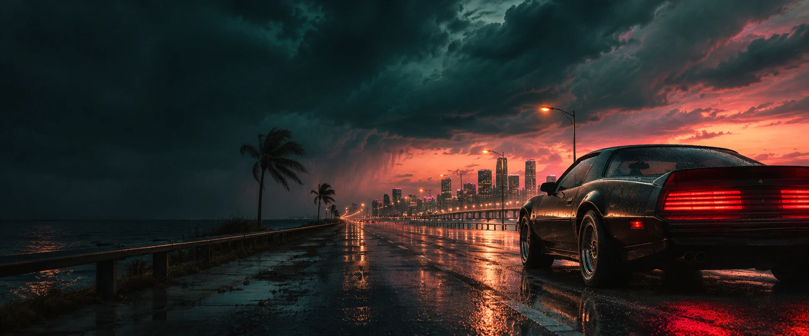

Xbox Edition for PC
LEONIDA
An independent GTA VI fan project.
A coastal drive you can play today.
Causeway at duskOriginal concept art
Winter project preview
Time to reveal · UTC
22 DEC · 00:00 UTCProject dossier
Xbox Edition
for PC.
LEONIDA follows an independent effort to bring the Xbox edition of Grand Theft Auto VI to Windows. We believe players should have a say in which machine they play on.
The first public project is a playable coastal drive. Follow the bends and cover 1.8 km from the waterfront to the keys. The Windows executable is a separate development milestone.
Read the edition notes ↗